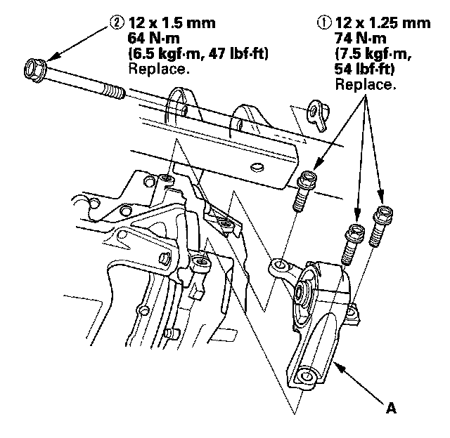

Front Engine Mount Replacement
Front Engine Mount Replacement1. Raise the lift to full height.
2. Remove the splash shield.
3. Remove the front mount (A).

4. Install the front mount, then tighten the new front mount mounting bolts in the numbered sequence shown.
5. Install the splash shield.